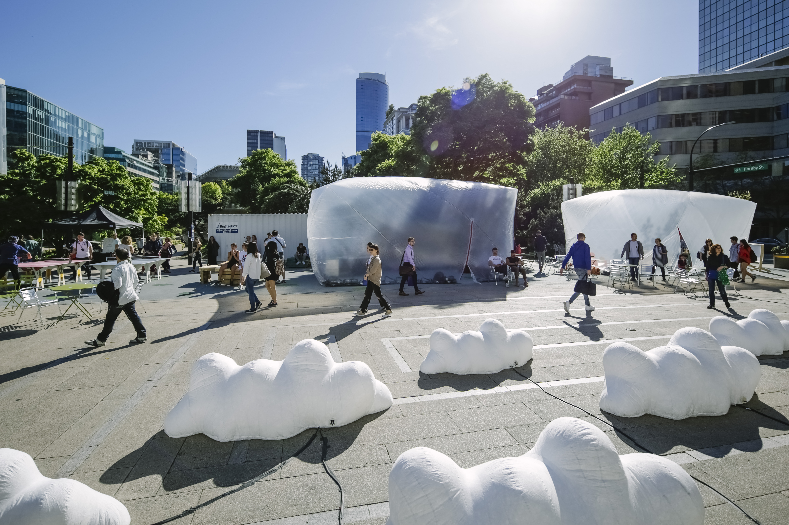
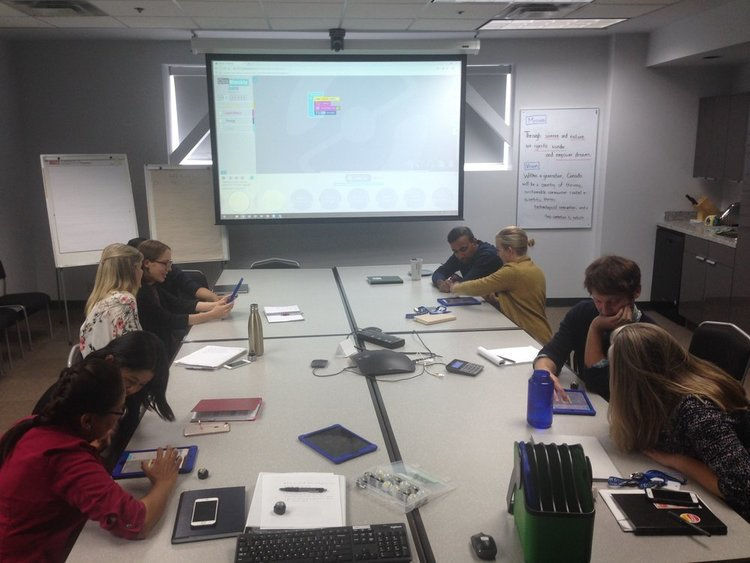
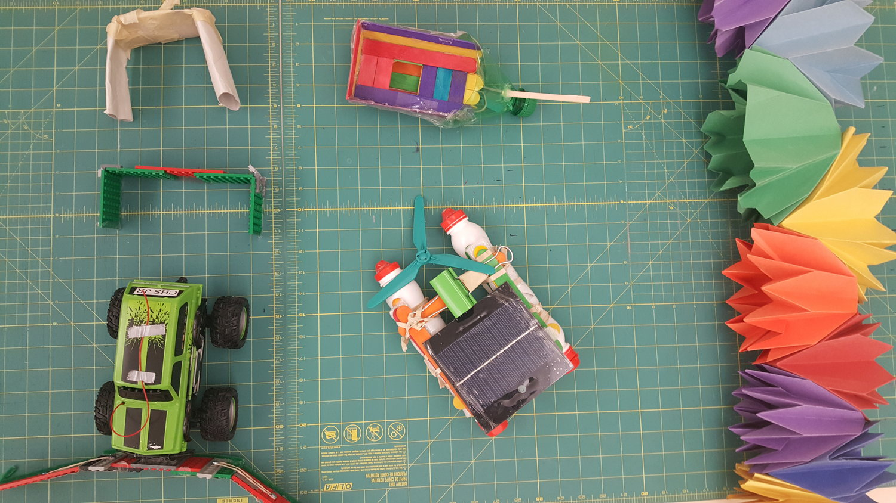

experience design / systems thinking / facilitation
Facilitation & Learning Experience Design
Designing for collaboration, learning and community.
My facilitation practice brings together service design, systems thinking, and inclusive pedagogy. I design
workshops and collaborative processes that help teams surface needs, align around shared goals, and
translate ideas into action. This work spans community
events, public galleries, post-secondary classrooms, and K–12 programming, all connected by a commitment to
human-centered, participatory, and accessible design.
Vancouver Design Nerds2018 – ongoing
Community co-design jams

Vancouver Design Nerds is a community of practice for local designers. I've designed and facilitated several
public jams, structured participatory events that bring 20–40 people together to think, make, and
speculate. Each jam is its own design problem: what structure suits this audience? How do you create
psychological safety for strangers to collaborate? When do you use a prompt, and when do you let the room
lead?
Events I designed & ran
New Normal Jam — a collective questioning of what "normal" meant before the pandemic,
and an imagining of new ways of living together in its aftermath
Time Travel Culture Jam (with SFU Public Square & Vancouver Mural Festival) —
participants joined "time travelers" from Vancouver's future to imagine the evolution of arts and
culture through speculative storytelling and time capsules
VanBubble — a participatory public art platform and experiment in creating inflatable
citizen spaces
I've taught across the interaction design curriculum at ECU, from second-year foundations to fourth-year
capstone. My courses centre on building design judgment, students learn to research,
prototype, test, and iterate, grounded in real human needs. I also supervised an 8-month interdisciplinary
co-op in which a team designed and built an interactive career platform from the ground up.
Courses taught
UX: Sketch, Prototype, Test, Emily Carr University (2020, 2021, 2022)
Design for Digital Interfaces, Emily Carr University (2022)
Interaction Design Studio, Trinity Western University (2023)
New Media Performance Lab, Capilano University (2021)
The Art + Technology Lab at NMG invites visitors to engage with technology as a creative and critical tool.
I design and facilitate workshops for diverse public audiences; kids experimenting with 3D printing to
adults exploring 360° video. The core design challenge is legibility: how do you make emerging technology
feel accessible and inviting, not intimidating?
Workshops designed & facilitated
360 Video
3D Model & Print
Pinwheel Party
Girls in Technology
Arch·kid·tecture
Public programmingCurriculum designEmerging technologyPrototypingCommunity engagement
Science World2018 – 2019
K–12 digital literacy curriculum

Tech-Up is Science World's province-wide initiative to help educators bring coding and digital thinking into
their classrooms. I developed curriculum and hands-on learning resources for K–12 teachers across BC,
translating computational concepts into creative, accessible experiences using Micro:bit, Scratch, and
HTML/CSS. I also delivered professional development workshops and provided remote implementation support to
schools across the province.
Curriculum designK–12Digital literacyEducator PD
Crofton House School2017 – 2018
Design thinking facilitation

Planned, equipped, and launched the school's first makerspace, establishing workflows for fabrication and
prototyping using 3D printing, laser cutting, Arduino, and digital modeling tools. I also supported
educators in integrating design thinking and STEAM-based approaches across subject areas.